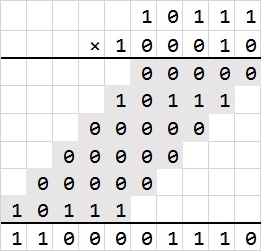
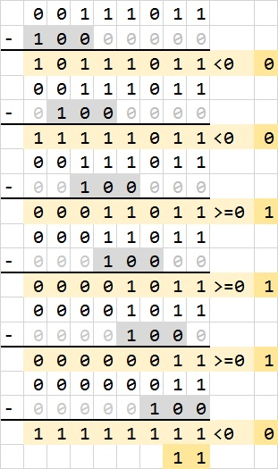

在Minecraft上搭建一个计算器
这篇文章是Minecraft搭建一个二进制计算器 的升级版。之所以写这篇文章，是因为要记录自己这几天的经历，以便以后重拾存档。
自从老家回来以后，我就开始继续学习计算机导论。 自学是一个有趣的事情，自由安排节奏，自由安排学习内容。在学到计算机运算原理的时候，我在想，为什么不把原先的二进制计算器升级为十进制、把加法扩展到加减乘除呢？
我觉得我能做到。怀着激动的心情我再一次打开了Minecraft。在这里要安利一个Minecraft版本，就是我的世界精灵，他内置了各种视频、教程、模组、启动器，再也不用到处跑论坛逛贴吧找资源了。比如我要使用创世神mod，可以直接在软件界面搜索，LitLoader启动器也已经内置，还有一些其他的mod，比如FPS优化、G键合成、NEI都有。说实话这个精灵启动器真是Minecraft党的福音。
做一件事，我们首先要明确要干什么，要怎么干。为了升级我们的计算器（暂时还没有上升到计算机层次），我们需要这样的几个模组。
- 十进制输入转二进制
- 二进制加法器、减法器、乘法器、除法器
- 二进制转十进制输出
- 十进制数字与运算符号显示器
说不如做，我这就开始一个一个实现需要的功能。
十进制转二进制（Dec2Bin）
如果我们要实现一个100以内的十进制数转二进制数的功能，我们至少需要7位二进制，Bin(1111111)=Dec(2^7-1)=Dec(127)，即7位2进制数最大只能表示到127，如果加上负数那就需要8位二进制。现代计算机大多都是64位，即一个内存单元就是一个64位2进制数，而常见的int类型范围也是[-2^31,2^31-1]，即32位，我们这里的8位真是小巫见大巫。Anyway，先搞出一个简单的模型出来，将来再搞性能上的扩展也未尝不可。
我们把计算能力限定在[-99,99]的整数以内，负号可以之后再说，我们先解决两位正整数的表示问题。用户在输入的时候依次输入两位0到9的整数，比如56=5*10+6，十位上乘以10，个位上乘以1。由于二进制数域和十进制数域的相似性，我们可以这样在计算器中进行转换：
Dec(56)=Dec(5)*Dec(10)+Dec(6)=Bin(0101)*Bin(1010)+Bin(0110)=...因此，十进制转二进制需要这三个基本单元：
- 0到9整数转二进制的转换器，这个可以用穷举法
- 乘法器，输入为两个4位二进制数，输出为一个8位二进制数
- 加法器，输入为两个8位二进制数，输出为一个8位二进制数
从下表可以看到，十进制0-9转二进制只要用穷举法就行了，标记好每一个数字对应的二进制数，由于每一次我们只选择一个十进制数字，所以可以取或然后输出。
给出一个Minecraft实现，上方从右到左是0-9，可见图中输入是Dec(9)，输出是Bin(1001)

关于乘法器和加法器，我们以后讨论。
二进制转十进制（Bin2Dec）
这个就比较麻烦。根据我们的构想，计算结果会是一个8位的二进制数。这个二进制数转换成十进制，就要用到除法，例如：Dec(56)的二进制表达是Bin(00111000)，我们有：
Dec(56)=Dec(5)*Dec(10)+Dec(6)=Bin(0101)*Bin(1010)+Bin(0110)=Bin(00111000)那么就有：
Dec(56)/Dec(10)=Dec(5)...Dec(6)相当于：
Bin(00111000)/Bin(1010)=Bin(0101)...Bin(0110)这样转换以后，我们得到两个，一个是商Bin(0101)=Dec(5)是十位上的数字，一个是余数Bin(0110)=Dec(6)是个位上数字，因此还要一个二进制0000-1001转十进制0-9的转换器。因此，二进制转十进制需要这两个基本单元：
- 除法器，输入为一个8位二进制数（除数默认是
Bin(1010)），输出为两个4位二进制数 - 二进制0000-1001转十进制0-9的转换器
二进制0000-1001转十进制0-9输入的是4位2进制数，不同的2进制数在同一位置上有相同的值，比如Dec(8)=Bin(1000)和Dec(9)=Bin(1001)，如果输出的是Dec(9)=Bin(1001)，Dec(8)=Bin(1000)也被激活了，因为Bin(1000)只需要首位为1，而Bin(1001)恰好首位为1。所以在这里我们应该将输入的2进制数与内置的二进制数进行比对，只有每一位上全部相等，才能输出为1，否则为0，这就保证了唯一性。
说起来容易，做起来困难。如何判断每一位上都相等呢？我们记输入的二进制数四个位置分别为A1、A2、A3、A4，内置的二进制数四个位置分别为B1、B2、B3、B4，那么我们要求的就是：
(NOT(A1 XOR B1)) AND (NOT(A2 XOR B2)) AND (NOT(A3 XOR B3)) AND (NOT(A4 XOR B4))
这里XOR就是相同取0，不同取1。
由于在Minecraft中AND的实现方式困难，我们把他全部转化成OR和NOT（OR操作只要红石导线相连就行了，在红石系统里面是最简单的门电路）。这样可以简化电路设计。
(NOT(A1 XOR B1)) AND (NOT(A2 XOR B2)) AND (NOT(A3 XOR B3)) AND (NOT(A4 XOR B4))
=NOT((A1 XOR B1) OR (A2 XOR B2) OR (A3 XOR B3) OR (A4 XOR B4))
我们下面还会接触到一些逻辑运算。在这里我们先简单介绍一下。 基本的三个逻辑符号就是与（AND，∧）、或（OR，∨）、非（NOT，¬），计算规则如下： 还有一些运算规律收录在百度百科的逻辑运算词条，可以自行查阅。我们将会用到的比较多的公式是：我们对最后一个公式做一个解释。异或（A AND B = NOT((NOT A) OR (NOT B)) A AND (B OR C) = (A AND B) OR (A AND C) A XOR B = ((NOT A) AND B) OR (A AND (NOT B))XOR，⊕）就是相同为0，不同为1，从下面的表我们可以看出计算过程： 在下文我们只用逻辑符号（∧，∨，¬，⊕）进行推导。
针对⊕，在原来的Blog里已经介绍了很多，这里我会给出一些不一样的表示方案。由于Minecraft中∧表示困难，我们把全部的∧化为∨与¬表示：A∧B=¬(¬A∨¬B)。于是我们就有：
A1⊕B1=(¬A1∧B1)∨(A1∧¬B1)=¬(A1∨¬B1)∨¬(¬A1∨B1)
我们可以分两种情况表示：
B1是给定的
这个时候，B1和¬B1可以分开表示，于是简化了电路。我们有横竖两个方案。
一，横放，如图中右边开关就是A1，左边上面的开关就是¬B1，左边下面的开关就是B1，左边的两个开关是给定的，不变化，从而只变化右边的输入A1。可以看到此处B1恒等于0，而右边输入A1也为0，输出结果是0，于是这是一个⊕。

二，我们给出一个竖放的版本，其结果在上方。原理是类似的。
B1不是给定的
这个时候B1与A1地位等同。根据以前的Blog，我们现在有两种表示方案。
一，这种方案是最小巧的，占地面积小，与相邻方块影响小（中继器不容易受干扰），但是高度较高有4层。
二，这种方案使用到了比较器，占地面积大，与相邻方块影响大（红石导线易受干扰），但是高度只有1层。
选择什么样的方案需要因时因地制宜。在我们这里只需要B1给定的⊕门。⊕门有一横一竖两种方案，对应的二进制0000-1001转十进制0-9也有一竖一横两种方案。注意第一张图是二进制0000-1111转十进制0-15的，是一个扩展方案，两张图中的输入都是Bin(0111)=Dec(7)。
加法器
加法器一直是我们关注的重点，在上一个Blog中我们已经得出了结论，那就是加法器就是把若干个全加器排列起来，而全加器是这样的一个东西：
- 全加器，输入为三个0或1的信号，两个是输入的数字，另一个是前一位的进位；输出为两个信号，一个是本位上的计算结果，一个是进位
令A，B分别为该位上输入的两个数字，C为前一位的进位，S为计算结果，C'为新的进位，我们有：
S=(A⊕B)⊕C
C'=((A⊕B)∧C)∨(A∧B)=¬(¬(A⊕B)∨¬C)∨¬(¬A∨¬B)
经过无数次复杂的测试，最终我找到了比较好的两个方案，分别使用上文提到的两种不同的⊕门。在建造过程中，需要注意的是进位的排布方式，这直接关系到全加器与全加器之间的距离，从而影响输入。
一，使用无比较器的⊕门。高一些，但是占地面积小。
二，使用有比较器的⊕门。矮一些，但是占地面积大。
乘法器
乘法的原理相信大家不陌生，如下给出了十进制乘法的一个例子。
而二进制乘法则更为简单，因为十进制依靠99乘法表进行计算，而二进制只需要11乘法表——甚至不需要考虑进位，因为一位的二进制乘法不会产生进位。一位的二进制乘法其实本质上就是∧门。

在做成Minecraft中的实体时，需要考虑占地面积的问题，如果按照上图进行排布，会占据大量空间且利用效率底下，我们可以做以下改进：每一次乘法以后，将其往后移一位，再与之后的乘法结果相加。这种方法叫错位相加，如图从下面开始往右再往上的黄色区域就是乘法结果。
移位操作在Minecraft中容易实现，Minecraft中信号可以向下传递。下面是做出来的乘法器的外貌图。
减法器
我们可以在数字前面增加一个1来表示负数，所以32位的int类型只能存储[-2^31,2^31-1]的二进制数。而计算机中的负数是以补码形式存在的。补码的意思就是除符号位外每一位取非然后加1。例如Dec(-9)=Bin(11001)（首位是符号位，不表示实际数字）在计算机中的存储事实上是：取非 > 1 0110 > 加1 > 1 0111（符号位不参与运算）。于是Bin(11001)的补码就是Bin(10111)。我们可以很清楚的看出，其实在计算机中，-9是以2^5-9储存的，这个指数上的5就是最大的位数。比如在32位int类型中，-9的存储方式就是2^32-9，这就保证了首位一定位1，从而与[0,2^31-1]的非负整数（首位为0）区别开来。比较特殊的是-2^31，他在计算机中的表示为Bin(1000...000)，他的补码恰好也是Bin(1000...000)，也即2^31，这就是说在这种补码的表示系统中，2^31和-2^31冲突了。为了用首位符号位区分正数负数，我们所以选择Bin(1000...000)表示-2^31。在这种表示方式下，0的二进制码是唯一的，从而相同位数的二进制数可以比不采取补码系统多增加一个数。
根据原数分情况地取补码，其实是首位符号位和其他各位的⊕门，只有当符号位和其他位上的取值不同，才可能输出为1，否则输出为0。而符号位上的值始终输出保持不变。
了解了补码，我们就可以将减法运算（A-B）变成加法运算（A+2^n-B，2^n-B为B的补码）。在Minecraft中的实现可以作以下的分解：
- 对B的每一位取
¬得到结果B' - B'加1，由于加数固定为1，这里只需要半加器（只要考虑B'的每一位的值和前面的进位：第一位进位为1），得到补码B''
- B''加A，得到结果即为A-B
我们举一个例子，Dec(-56)-Dec(-67)=Dec(11)，如果使用8位二进制表示，在计算机中：
Dec( 56)=Bin(00111000)Dec(-56)=Bin(11001000)Dec( 67)=Bin(01000011)Dec(-67)=Bin(10111101)
记住首位是符号位。
Dec(-56)-Dec(-67)=Bin(11001000)-Bin(10111101)=Bin(11001000)+Bin(01000011)=Bin(00001011)=Dec(11)
下面给出一个补码器（上图）和一个减法器（下图）。减法器事实上就是比补码器多了一个加法器和一个运算位，因为补码器是根据自身的符号位进行处理的，而减法器在计算时把两个输入看作是普通的8位二进制数，不区分符号位。

除法器
与乘法器一样，在研制除法器之前需要首先理解除法的原理。举个例子，十进制除法的原理如下：
59/4=(1*40+4*4+3)/4=(1*10+4*1)...3=14...3
655/4=(1*400+6*40+3*4+3)/4=(1*100+6*10+3*1)...3=163...3
事实上我们的竖式除法就是根据上述原理得到的：
如果是二进制除法，其运算过程类似，下图表示的是Bin(00111011)/Bin(100)=Dec(59)/Dec(4)的除法。可以看到，原理是与乘法类似的错位相减法。
二进制除法的一个好处，就是计算商时每一位上不是0就是1，而01的取值只要比较上一次运算的余数和这一次除数的大小。除数随着位数的增加错位排列（图中灰色格子）。如果上一次运算的余数比这一次除数大，那么输出上一次运算的余数减去这一次除数的结果，也即商的对应位置上取值为1；如果上一次运算的余数比这一次除数小，那么仍然输出上一次的余数，也即商的对应位置上取值为0。具体的实现过程见下图。

除此以外还有几个问题。首先，我们要认识到每一个除数的位数是不同的，我们不能确定从哪一位开始计算商，我们只能预排列最大的位数，也就是当除数为1的时候从最高位开始计算商。同时我们需要引入科学计数的概念，也即找到除数的第一个不为0的位置，在错位相减的时候，这个位置前面的除数都取0，让被除数自然而然地下降到合理的位置开始计算；在最后的结果中，除数的第一个不为0的位置之前的商全部舍去为0，因为那些不是正式开始计算的合理结果。具体的过程如图所示。
其次，在比较上一次运算的余数和这一次除数的大小时，我们使用了减法，但是注意，如果减数和被减数一正一负，减法结果很有可能溢出，就没有办法通过首位符号来判断正负情况了。唯一的解决方法时限定减数和被减数的范围，也即把除数和被除数都取绝对值，8位二进制数绝对值最大就是128（-128取绝对值时128，其二进制表达在8位以内和-128一致）。这样一来，8位非负数和8位非负数相减不会溢出，最大也就-128，仍然在8位二进制数的表达范围内（[-2^31,2^31-1]），可以通过减法结果的首位符号位表示正负情况。在取绝对值的情况下，8位二进制数首位符号位始终为0，除了Bin(10000000)。因此需要注意的是Bin(10000000)减去0的问题，Bin(10000000)也即他自身的绝对值，与Bin(10000000)-Bin(0)的结果恰好一致，所以这里恰好没有矛盾。
最后，考虑商的符号问题。商的符号取决于原始除数和被除数的符号，是一个异或门。下图给出了原理，1表示负，0表示正。
我们可以这样总结，一个除法器从输入到输出需要经历以下几个环节：
- 对两个输入取绝对值，绝对值器由以下两部分构成：补码器和符号器。计算机中的二进制数用补码表示，需要再次取补码还原原来的数字；由于绝对值一定为正，首位符号位恒为零，除了
Dec(-128)=Bin(10000000)例外：当且仅当后面7位均为0且首位为1时，符号位才为1。 - 对除数进行科学计数，给出第一个不为0的位置。首先我们需要一条向下传递信号的通道，其次就是当且仅当传递过来的信号为0且本位上的原始信号为1时，本位上的输出才为1。显然这是一个
∧门。 - 对除数和科学计数的结果进行错位排列，这一点的原因在之前已经提到：错位排列除数一直到最后一位，并把除数的第一个不为0的位置之前的全部舍去，这一点可以用科学计数结果进行处理。在操作时注意错位排列不能相互干扰，且要为以后的除法器算子留下足够的空间。
- 制作除法器算子。被除数依次减去错位排列的除数，结果小于零则返回原数，结果大于等于0则保留结果。结果和零的关系是通过结果的首位符号位判断的：首位为1，返回原数，首位为0，返回结果。因此除法器算子的输出应该是：
首位*原数+(1-首位)*结果，化成逻辑语言就是：(首位∧原数)∨(¬首位∧结果)，这可以作为插件依靠在减法器上。同时，注意首位符号位本身也是结果的一部分，所以输出的第一位也就是(首位∧原数首位)∨(¬首位∧首位)=首位∧原数首位，可以依据这个简化电路。 - 最后依据原理图进行组装，并增加商的符号位等功能。
来看看组装完成后的除法器。这个除法器就是输入内存中的两个数，可以计算出他们的商。余数我们可以用更复杂一点的方法编程算出。（想一想为什么不直接输出余数？）
至此，我们已经可以搭建一个简易计算器了！受制于红石电路原件的特性，这个计算器也许会很慢很慢，但也标志着自此我的世界人民摆脱了刀耕火种的蛮荒时代，步入伟大的现代文明。